theme_set(
ggthemes::theme_hc(base_size = 12, base_family = "sans", style = "darkunica") +
theme(title = element_text(color = "floralwhite"),
axis.title.y = element_text(angle = 90),
strip.background = element_rect(fill = "darkgrey"))
)12 Monsters and Mixtures
We set the current theme used for plotting
data(iris)
ggplot(iris, aes(x = Petal.Length, y = Sepal.Length, color = Species)) +
geom_point() +
labs(title = "Iris dataset", subtitle = sprintf("%d lines", nrow(iris)))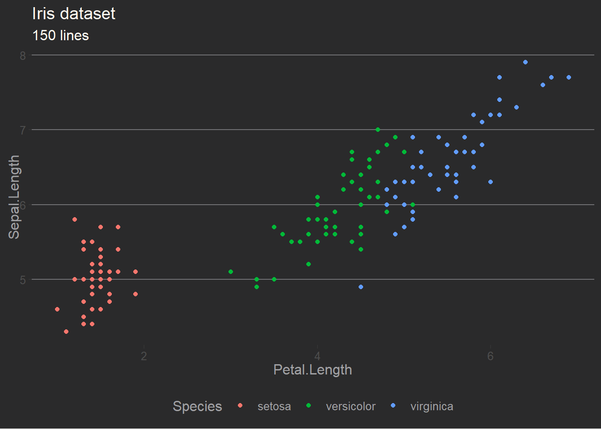
12.1 Over-dispersed outcomes
12.1.1 Beta-binomial
12.1.1.1 Beta-binomial distribution
The beta distribution is
\[ \mathcal{Beta}(x|\alpha, \beta) = \frac{\Gamma(\alpha+\beta)}{\Gamma(\alpha)\Gamma(\beta)} x^{\alpha -1} (1-x)^{\beta -1} = \frac{1}{B(\alpha, \beta)} x^{\alpha -1} (1-x)^{\beta -1}, 0 \leq x \leq 1 \] which is not the format used by McElreath. He uses the following shape parameters which are much easier to understand as \(\mu\) is the average of the distribution and \(\kappa\) is the spread.
\[ \mu = \bar{p} = \frac{\alpha}{\alpha + \beta} \\ \kappa = \theta = \alpha + \beta \]
the simstudy package provide the function to perform that conversion from \(mean = \mu\) and \(precision = \kappa\) to the shape(mathematical) parameters \(\alpha\) and \(\beta\)
paramsMeanKappa <- list(mean = 0.5, kappa = 5)
paramsShape <- with(paramsMeanKappa, simstudy::betaGetShapes(mean, kappa))
stopifnot(paramsShape$shape1 == paramsMeanKappa$mean * paramsMeanKappa$kappa,
paramsShape$shape2 == (1 - paramsMeanKappa$mean) * paramsMeanKappa$kappa)and the parameters are used in different beta functions but give the same result.
dens1 <- with(paramsMeanKappa, rethinking::dbeta2(0.25, mean, kappa))
dens2 <- with(paramsShape, dbeta(0.25, shape1, shape2))
stopifnot(dens1 == dens2)and the standard deviation of the beta binomial distribution is
\[ \sigma = \sqrt{\frac{\mu(1-\mu)}{\kappa+1}} \]
The beta-binomial distribution is not defined in brms. We need to define the family in `brms as well as a stan_funs() and stanvar().
# IMPORTANT: we could have used lb = c(NA, 0) as Kurtz does
# but McElreath adds 2 to theta
# see note just below on lb = c(NA, 2)
beta_binomial2 <- custom_family(
"beta_binomial2", dpars = c("mu", "phi"),
links = c("logit", "log"), lb = c(NA, 2),
type = "int", vars = "vint1[n]"
)
stan_funs <- "
real beta_binomial2_lpmf(int y, real mu, real phi, int T) {
return beta_binomial_lpmf(y | T, mu * phi, (1 - mu) * phi);
}
int beta_binomial2_rng(real mu, real phi, int T) {
return beta_binomial_rng(T, mu * phi, (1 - mu) * phi);
}
"
stanvars <- stanvar(scode = stan_funs, block = "functions")Did you notice
lb = c(NA, 2)? In Burkner’s vignette the lower bound of \(\phi\) is 0. Since McElreath wanted the lower bound to 2, we will use lb = 2.
See also McElreath explanation of 2 in section 12.1.1 just before R code 12.1 on p. 371.
Variations of the beta-binomial distribution using different parameter values can be illustrated as follows
p <- list()
p$df <- crossing(pbar = c(0.25, 0.5, 0.75), theta = c(5, 15, 30)) %>%
expand(nesting(pbar, theta),
x = seq(from = 0, to = 1, length.out = 100)) %>%
mutate(shape1 = betaGetShapes(pbar, theta)$shape1,
shape2 = betaGetShapes(pbar, theta)$shape2) %>%
mutate(density = dbeta(x, shape1, shape2),
mu = paste("mu", pbar, sep = "=="),
kappa = paste("kappa", theta, sep = "=="))
p$plot <- ggplot(data = p$df, aes(x = x, y = density)) +
geom_area(fill = "darkorchid1") +
scale_y_continuous(NULL, labels = NULL) +
theme(axis.ticks.y = element_blank()) +
labs(title = "Beta can take many shapes",
x = "parameter space") +
facet_grid(kappa~mu, labeller = label_parsed)
p$plot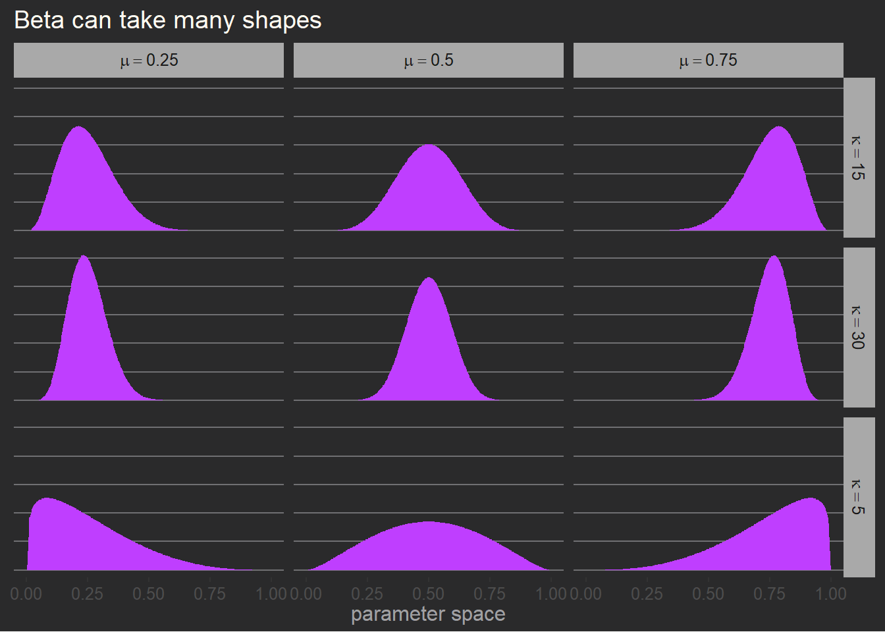
12.1.1.2 Beta-binomial model
The data used is
data(UCBadmit)
dataAdmit <- UCBadmit %>%
mutate(gid = ifelse(applicant.gender == "male", "1", "2"))
rm(UCBadmit)
# glimpse(dataAdmit)There is an error in the model defined by McElrath, to concur with his code at 11.26, the model is
\[ \begin{align*} admit_i &\sim \mathcal{BetaBinomial}(N_i, \bar{p}_i, \phi) \\ logit(\bar{p}_i) &= \alpha_{gid[i]} \\ \alpha &\sim \mathcal{N}(0, 1.5) \\ \phi &\sim \mathcal{Exponential}(1) \end{align*} \]
which we fit as follows, see important note above on beta_binomial2()
tictoc::tic(msg = sprintf("run time of %s, use the cache.", "70 secs."))
b12.1 <- xfun::cache_rds({
brm(
data = dataAdmit,
family = beta_binomial2,
admit | vint(applications) ~ 0 + gid,
prior = c(prior(normal(0, 1.5), class = b),
prior(exponential(1), class = phi)),
cores = detectCores(),
stanvars = stanvars,
seed = 12)},
file = "ch12_b12_01")Compiling Stan program...Start samplingtictoc::toc()run time of 70 secs., use the cache.: 65.42 sec elapsedsummary(b12.1) Family: beta_binomial2
Links: mu = logit; phi = identity
Formula: admit | vint(applications) ~ 0 + gid
Data: dataAdmit (Number of observations: 12)
Draws: 4 chains, each with iter = 2000; warmup = 1000; thin = 1;
total post-warmup draws = 4000
Population-Level Effects:
Estimate Est.Error l-95% CI u-95% CI Rhat Bulk_ESS Tail_ESS
gid1 -0.43 0.42 -1.29 0.41 1.00 2799 2309
gid2 -0.33 0.40 -1.13 0.45 1.00 3040 2389
Family Specific Parameters:
Estimate Est.Error l-95% CI u-95% CI Rhat Bulk_ESS Tail_ESS
phi 3.04 0.79 2.05 4.94 1.00 2453 1274
Draws were sampled using sampling(NUTS). For each parameter, Bulk_ESS
and Tail_ESS are effective sample size measures, and Rhat is the potential
scale reduction factor on split chains (at convergence, Rhat = 1).and the posterior data which represents the distribution rather than the data
samples <- list()
samples$data <- as_draws_df(b12.1) %>%
mutate_variables(a_diff = b_gid1 - b_gid2,
p_gid1 = gtools::inv.logit(b_gid1),
p_gid2 = gtools::inv.logit(b_gid2))
samples$data %>%
summarize_draws("mean", "median", "sd", "mad",
~quantile2(.x, probs = c(0.055, 0.945)),
default_convergence_measures()) %>%
filter(variable != "lp__") %>%
mutate(across(.cols = where(is.double), .fns = round, digits = 2))# A tibble: 7 × 10
variable mean median sd mad q5.5 q94.5 rhat ess_bulk ess_tail
<chr> <dbl> <dbl> <dbl> <dbl> <dbl> <dbl> <dbl> <dbl> <dbl>
1 b_gid1 -0.43 -0.43 0.42 0.4 -1.13 0.22 1 2799. 2309.
2 b_gid2 -0.33 -0.32 0.4 0.38 -0.96 0.31 1 3040. 2389.
3 phi 3.04 2.87 0.79 0.75 2.1 4.51 1 2453. 1274.
4 lprior -3.83 -3.67 0.8 0.75 -5.3 -2.85 1 2612. 1455.
5 a_diff -0.11 -0.11 0.58 0.55 -1.06 0.82 1 2812. 2356.
6 p_gid1 0.4 0.39 0.1 0.09 0.24 0.56 1 2799. 2309.
7 p_gid2 0.42 0.42 0.09 0.09 0.28 0.58 1 3040. 2389.# stats used in the plot later
samples$stats <- list(
mean_pgid2 = mean(samples$data$p_gid2),
mean_phi = mean(samples$data$phi)
)and so, just like McElreath, the difference between the admission rates a_diff is close to zero.
12.1.1.3 Beta-binomial plots
See Kurz (2020) for the details
set.seed(12)
p <- list()
p$df <-
samples$data %>%
slice_sample(n = 100) %>%
expand(nesting(.draw, p_gid2, phi),
x = seq(from = 0, to = 1, by = .005)) %>%
mutate(density = purrr::pmap_dbl(list(x, p_gid2, phi), rethinking::dbeta2))
glimpse(p$df)Rows: 20,100
Columns: 5
$ .draw <int> 72, 72, 72, 72, 72, 72, 72, 72, 72, 72, 72, 72, 72, 72, 72, 72…
$ p_gid2 <dbl> 0.4924631, 0.4924631, 0.4924631, 0.4924631, 0.4924631, 0.49246…
$ phi <dbl> 2.633623, 2.633623, 2.633623, 2.633623, 2.633623, 2.633623, 2.…
$ x <dbl> 0.000, 0.005, 0.010, 0.015, 0.020, 0.025, 0.030, 0.035, 0.040,…
$ density <dbl> 0.0000000, 0.3787500, 0.4645266, 0.5230734, 0.5687490, 0.60666…samples$stats$mean_pgid2
[1] 0.4219847
$mean_phi
[1] 3.035884ggplot(p$df, aes(x = x, y = density)) +
stat_function(fun = rethinking::dbeta2,
args = list(prob = samples$stats$mean_pgid2,
theta = samples$stats$mean_phi),
linewidth = 1, color = "magenta") +
geom_line(aes(group = .draw),
alpha = .2, color = "green") +
scale_y_continuous(breaks = scales::breaks_width(width = 0.5), limits = c(0, 3)) +
labs(subtitle = "distribution of female admission rates",
x = "probability admit", y = "density")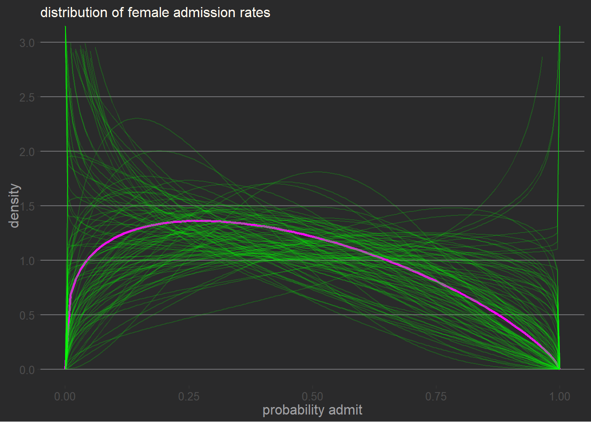
and for the posterior validation check we need to create funcitions to handle predictions and fitted values. See Kurz (2020).
expose_functions(b12.1, vectorize = TRUE)
# required to use `predict()`
log_lik_beta_binomial2 <- function(i, prep) {
mu <- prep$dpars$mu[, i]
phi <- prep$dpars$phi
trials <- prep$data$vint1[i]
y <- prep$data$Y[i]
beta_binomial2_lpmf(y, mu, phi, trials)
}
posterior_predict_beta_binomial2 <- function(i, prep, ...) {
mu <- prep$dpars$mu[, i]
phi <- prep$dpars$phi
trials <- prep$data$vint1[i]
beta_binomial2_rng(mu, phi, trials)
}
# required to use `fitted()`
posterior_epred_beta_binomial2 <- function(prep) {
mu <- prep$dpars$mu
trials <- prep$data$vint1
trials <- matrix(trials, nrow = nrow(mu), ncol = ncol(mu), byrow = TRUE)
mu * trials
}samples$predict <- predicted_draws(b12.1, newdata = dataAdmit)
# samples$predict
samples$predict_stats <- samples$predict %>% ggdist::mean_qi(.width = 0.89) %>%
mutate(case = seq_len(n()),
p = .prediction / applications,
p_lower = .lower / applications,
p_upper = .upper / applications)
samples$epred <- epred_draws(b12.1, newdata = dataAdmit)
samples$epred_stats <- samples$epred %>% ggdist::mean_qi(.width = 0.89) %>%
mutate(case = seq_len(n()),
p = .epred / applications,
p_lower = .lower / applications,
p_upper = .upper / applications)
p <- list()
p$plot <- ggplot(samples$predict_stats, aes(x = case, y = p)) +
geom_linerange(aes(ymin = p_lower, ymax = p_upper),
size = 2.5, alpha = 1/3, color = "palegreen") +
geom_pointrange(samples$epred_stats,
mapping = aes(x = case, y = p, ymin = p_lower, ymax = p_upper),
size = 1, shape = 1, color = "lightyellow") +
geom_point(dataAdmit %>% mutate(case = seq_len(n())),
mapping = aes(x = case, y = admit / applications),
size = 2, color = "turquoise") +
scale_x_continuous(breaks = 1:12) +
scale_y_continuous(breaks = 0:5 / 5, limits = c(0, 1)) +
theme(legend.position = "none") +
labs(Title = "Admission data",
subtitle = "Posterior validation check",
y = "admittance probability")Warning: Using `size` aesthetic for lines was deprecated in ggplot2 3.4.0.
ℹ Please use `linewidth` instead.p$plot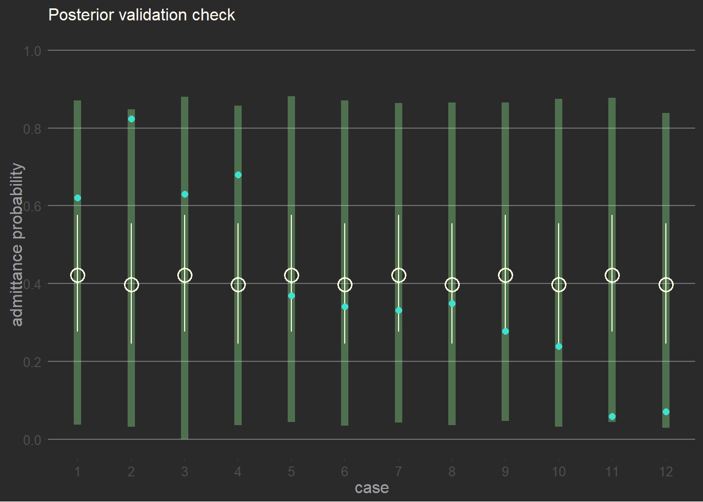
12.1.2 Negative-binomial or gamma-Poisson
You absolutely need to look at the Poisson-lognormal mixture in Kurtz’s blog Kurtz lognormal. See the added section below.
12.1.2.1 Gamma-Poisson distribution shape
In terms of the shape \(\alpha\) and rate \(\beta\) the gamma distribution is
\[ \mathcal{Gamma}(y \mid\alpha, \beta) = \frac{\beta^\alpha y^{\alpha-1} e^{-\beta y}}{\Gamma(\alpha)} \]
but the rate \(\beta\) and scale \(\theta\) are the reciprocal of each other. Therefore the gamma distribution can be expressed in terms of shape \(\alpha\) and scale \(\theta\) as
\[ \mathcal{Gamma}(y \mid\alpha, \theta) = \frac{y^{\alpha-1} e^{-\frac{y}{\theta}}}{\theta^\alpha\Gamma(\alpha)} \]
and, also, the gamma distribution can be expressed in terms of mean \(\mu\) and shape \(\alpha\)
\[ \mathcal{Gamma}(y \mid \mu, \alpha) = \frac{(\frac{\alpha}{\mu})^\alpha}{\Gamma(\alpha)} y^{\alpha-1} \exp{(-\frac{\alpha y}{\mu})} \]
To convert from the \(\mu = mean\) and \(\theta = dispersion= \frac{mean^2}{variance}\) to the shape and rate parameters we use the function simstudy::gammaGetShapeRate(). To help us find the mean and dispersion to use with simstudy::gammaGetShapeRate(), the custom function gammaGetMeanDispersion is also defined. It is the inverse of simstudy::gammaGetShapeRate().
# custom function which is the inverse function of gammaGetShapeRate()
gammaGetMeanDispersion <- function(shape, rate) {
stopifnot(shape > 0, rate > 0)
dispersion <- 1 / shape
mean <- shape / rate
list("mean" = mean, "dispersion" = dispersion)
}
# test it
prm <- list()
prm <- within(prm, {
values <- list(mean = 1, dispersion = 10)
# get the shape and rate from the mean and dispersion
sr <- gammaGetShapeRate(mean = values$mean, dispersion = values$dispersion)
# using the inverse should take you back to the mean and dispersion
md <- gammaGetMeanDispersion(shape = sr$shape, rate = sr$shape)
})
# using the inverse should take you back to the mean and dispersion
stopifnot(identical(prm$md, prm$values))In the dgamma the shape parameter influence the rate which is equivalent to Poisson \(lambda\)
p <- list()
p$df <- crossing(shape = c(0.1, 0.25, 0.5, 0.75, 1, 2),
rate = c(1/10, 1/5, 1/2, 1)) %>%
expand(nesting(shape, rate),
x = seq(from = 0, to = 5, length.out = 100)) %>%
mutate(density = dgamma(x, shape, rate),
shape_char = paste("shape", shape, sep = "=="),
rate_char = paste("rate", rate, sep = "=="))p$plot <- ggplot(data = p$df %>% filter(shape == 0.1, rate == 0.1),
aes(x = x, y = density)) +
geom_area(fill = "orchid") +
scale_y_continuous(NULL, labels = NULL) +
labs(title = "Gamma prior with default values (shape = 0.1, rate = 0.1)",
x = "parameter space") +
theme(axis.ticks.y = element_blank())
p$plotWarning: Removed 1 rows containing non-finite values (`stat_align()`).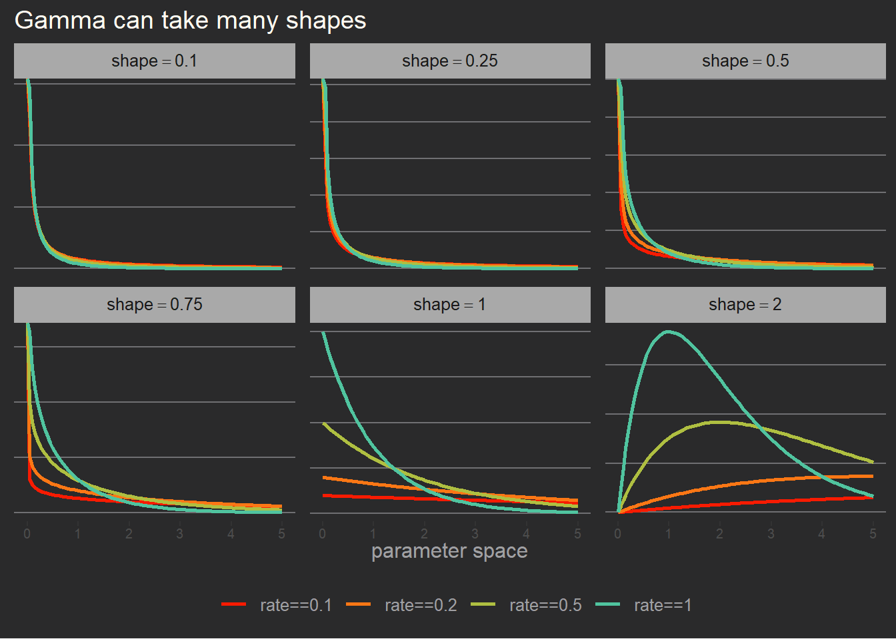
and the plot with different values of sape and rate
p$plot <- ggplot(data = p$df, aes(x = x, y = density, color = rate_char)) +
geom_line(size = 1) +
scale_y_continuous(NULL, labels = NULL) +
scale_color_paletteer_d("ggthemes::excel_Atlas") +
theme(axis.text.x = element_text(size = rel(0.8)),
axis.ticks.y = element_blank(),
legend.title = element_blank()) +
labs(title = "Gamma can take many shapes",
x = "parameter space") +
facet_wrap(. ~ shape_char, scales = "free_y", labeller = label_parsed)
p$plot12.1.2.2 Data
data(Kline)
dataKline <- Kline %>%
mutate(log_pop_s = log(population),
log_pop_s = as.vector(scale(log_pop_s)),
cid = factor(contact, levels = c("low", "high")))
rm(Kline)
skimr::skim(dataKline)| Name | dataKline |
| Number of rows | 10 |
| Number of columns | 7 |
| _______________________ | |
| Column type frequency: | |
| factor | 3 |
| numeric | 4 |
| ________________________ | |
| Group variables | None |
Variable type: factor
| skim_variable | n_missing | complete_rate | ordered | n_unique | top_counts |
|---|---|---|---|---|---|
| culture | 0 | 1 | FALSE | 10 | Chu: 1, Haw: 1, Lau: 1, Mal: 1 |
| contact | 0 | 1 | FALSE | 2 | hig: 5, low: 5 |
| cid | 0 | 1 | FALSE | 2 | low: 5, hig: 5 |
Variable type: numeric
| skim_variable | n_missing | complete_rate | mean | sd | p0 | p25 | p50 | p75 | p100 | hist |
|---|---|---|---|---|---|---|---|---|---|---|
| population | 0 | 1 | 34109.10 | 84793.03 | 1100.00 | 3897.75 | 7700.00 | 12050.00 | 2.75e+05 | ▇▁▁▁▁ |
| total_tools | 0 | 1 | 34.80 | 17.85 | 13.00 | 22.50 | 30.50 | 42.25 | 7.10e+01 | ▇▃▃▂▂ |
| mean_TU | 0 | 1 | 4.83 | 1.14 | 3.20 | 4.00 | 4.85 | 5.30 | 6.60e+00 | ▅▅▇▂▅ |
| log_pop_s | 0 | 1 | 0.00 | 1.00 | -1.29 | -0.47 | -0.02 | 0.27 | 2.32e+00 | ▃▇▃▁▂ |
Null model
This section is important as it serves to evaluate the prior to use for the full model. See how Kurz (2020) does it. My work below does not show everything (yet).
Start with the null model, or as Kurtz calls it, the intercept-only model.
\[ \begin{align*} total\_tools_i &\sim \mathcal{GammaPoisson}(\mu, \alpha) \\ log(\mu) &= \beta_0 \\ \beta_0 &\sim \mathcal{Normal}(3, 0.5) \\ \alpha &\sim \mathcal{Gamma}(0.01,0.01) \end{align*} \]
and the fit with brm
tictoc::tic(msg = sprintf("run time of %s, use the cache.", "70 secs."))
b12.2a <- xfun::cache_rds({
out <- brm(data = dataKline,
family = negbinomial,
total_tools ~ 1,
prior = c(prior(normal(3, 0.5), class = Intercept), # beta_0
prior(gamma(0.01, 0.01), class = shape)), # alpha
cores = detectCores(),
seed = 12)
out <- brms::add_criterion(out, criterion = c("waic", "loo"))
out},
file = "ch12_b12_02a")Compiling Stan program...Start samplingWarning:
1 (10.0%) p_waic estimates greater than 0.4. We recommend trying loo instead.tictoc::toc()run time of 70 secs., use the cache.: 58.88 sec elapsedsummary(b12.2a) Family: negbinomial
Links: mu = log; shape = identity
Formula: total_tools ~ 1
Data: dataKline (Number of observations: 10)
Draws: 4 chains, each with iter = 2000; warmup = 1000; thin = 1;
total post-warmup draws = 4000
Population-Level Effects:
Estimate Est.Error l-95% CI u-95% CI Rhat Bulk_ESS Tail_ESS
Intercept 3.50 0.16 3.18 3.81 1.00 1799 2021
Family Specific Parameters:
Estimate Est.Error l-95% CI u-95% CI Rhat Bulk_ESS Tail_ESS
shape 4.85 2.61 1.45 11.43 1.00 1859 2137
Draws were sampled using sampling(NUTS). For each parameter, Bulk_ESS
and Tail_ESS are effective sample size measures, and Rhat is the potential
scale reduction factor on split chains (at convergence, Rhat = 1).and the fit with ulam
message("Could not fix the installation of cmdstanr")Could not fix the installation of cmdstanr# tictoc::tic(msg = sprintf("run time of %s, use the cache.", "70 secs."))
# m12.2a <- xfun::cache_rds({
# ulam(
# data = dataKline,
# flist = alist(
# total_tools ~ dgampois(mu, scale),
# log(mu) <- a,
# a ~ dnorm(3, 0.5),
# scale ~ dexp(1)),
# log_lik = TRUE)},
# file = "ch12_m12_02a")
# tictoc::toc()
#
# set_cmdstan_path(path = NULL)
# cmdstan_path()
# Sys.getenv("CMDSTAN")# summary(m12.2a)# posterior_summary(b12.2a)# precis(m12.2a)m <- posterior_summary(b12.2a)["b_Intercept", "Estimate"]
m[1] 3.500335s <- posterior_summary(b12.2a)["shape", "Estimate"]
d <- s
simstudy::gammaGetShapeRate(mean = m, dispersion = d)$shape
[1] 0.2062034
$rate
[1] 0.05890961Because the model has only the intercept and no predictor, there is only one value for the Intercept which is the mean of the 10 Poisson rates \(\lambda_i, i =1,...10\).
The \(alpha\) is simply the \(shape\) parameter of gamma … and does not really describe anything. It is really used to define the shape of the distribution.
And the prediction plots show that the distributions all use the same rate and shape.
samples <- list()
samples$data <- predicted_draws(b12.2a, newdata = dataKline)
ggplot(samples$data, aes(.prediction, color = culture)) +
geom_density(size = 1) +
scale_y_continuous(NULL, labels = NULL) +
scale_color_paletteer_d("khroma::soil") +
theme(axis.text.x = element_text(size = rel(0.8)),
axis.ticks.y = element_blank(),
legend.position = "none") +
labs(title = "Predictive distributions",
x = "total tools") +
facet_wrap(. ~ culture)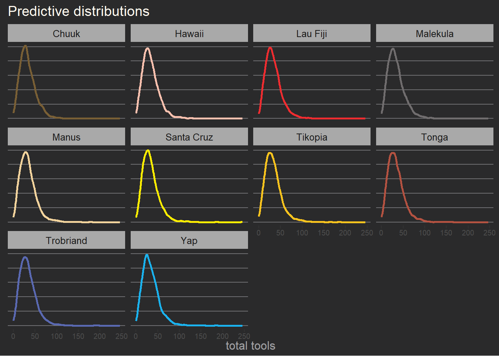
and we can also visualize the distributions of our \(rate\) and \(shape\) parameters
samples <- list()
samples$data <- as_draws_df(b12.2a) %>%
select(b_Intercept, shape) %>%
mutate(mu = exp(b_Intercept),
theta = mu / shape) %>%
select(mu, shape, theta) %>%
pivot_longer(cols = everything())Warning: Dropping 'draws_df' class as required metadata was removed.# str(samples$data)
ggplot(samples$data, aes(value, fill = name, color = name)) +
geom_density(geom = "area") +
scale_y_continuous(NULL, labels = NULL) +
scale_fill_paletteer_d("fishualize::Scarus_quoyi") +
scale_color_paletteer_d("fishualize::Scarus_quoyi") +
theme(axis.text.x = element_text(size = rel(0.8)),
axis.ticks.y = element_blank(),
legend.position = "none") +
labs(title = "Posterior distributions of rate and shape",
x = NULL) +
facet_wrap(. ~ name, scales = "free_y")Warning in geom_density(geom = "area"): Ignoring unknown parameters: `geom`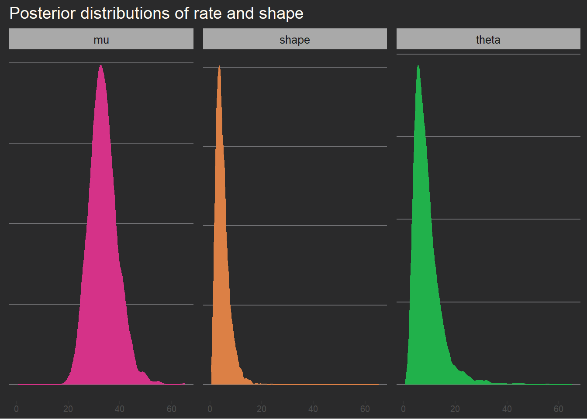
Full model
\[ \begin{align*} total\_tools_i &\sim \mathcal{GammaPoisson}(\mu_i, \alpha) \\ log(\mu) &= \frac{\exp{(\beta_{0,cid[i]})} \cdot population_i^{\beta_{1,cid[i]}}}{\gamma} \\ \beta_{0,j} &\sim \mathcal{Normal}(1, 1) \\ \beta_{1,j} &\sim \mathcal{Exponential}(1) \\ \gamma &\sim \mathcal{Exponential}(1) \\ \alpha &\sim \mathcal{Exponential}(1) \end{align*} \]
tictoc::tic(msg = sprintf("run time of %s, use the cache.", "75 secs."))
b12.2b <- xfun::cache_rds({
# we have to be careful when using waic with gamma-Poisson
# but in this case we do it. We use t in the plot.
out <- brm(data = dataKline,
family = negbinomial(link = "identity"),
bf(total_tools ~ exp(b0) * population^b1 / g,
b0 + b1 ~ 0 + cid,
g ~ 1,
nl = TRUE),
prior = c(prior(normal(1, 1), nlpar = b0),
prior(exponential(1), nlpar = b1, lb = 0),
prior(exponential(1), nlpar = g, lb = 0),
prior(exponential(1), class = shape)),
cores = detectCores(),
seed = 12,
control = list(adapt_delta = .95))
out <- brms::add_criterion(out, criterion = c("waic", "loo"))
out},
file = "ch12_b12_02b")Compiling Stan program...Start samplingtictoc::toc()run time of 75 secs., use the cache.: 65.47 sec elapsedsummary(b12.2b) Family: negbinomial
Links: mu = identity; shape = identity
Formula: total_tools ~ exp(b0) * population^b1/g
b0 ~ 0 + cid
b1 ~ 0 + cid
g ~ 1
Data: dataKline (Number of observations: 10)
Draws: 4 chains, each with iter = 2000; warmup = 1000; thin = 1;
total post-warmup draws = 4000
Population-Level Effects:
Estimate Est.Error l-95% CI u-95% CI Rhat Bulk_ESS Tail_ESS
b0_cidlow 0.95 0.82 -0.68 2.54 1.00 2031 1779
b0_cidhigh 1.03 0.91 -0.77 2.74 1.00 2013 2129
b1_cidlow 0.24 0.10 0.06 0.44 1.00 1412 1229
b1_cidhigh 0.26 0.13 0.03 0.52 1.00 1342 869
g_Intercept 1.07 0.85 0.15 3.32 1.00 1568 1699
Family Specific Parameters:
Estimate Est.Error l-95% CI u-95% CI Rhat Bulk_ESS Tail_ESS
shape 3.70 1.61 1.27 7.58 1.00 2695 2439
Draws were sampled using sampling(NUTS). For each parameter, Bulk_ESS
and Tail_ESS are effective sample size measures, and Rhat is the potential
scale reduction factor on split chains (at convergence, Rhat = 1).add the pareto k for use in the plot later
# append k value to data
dataKline <- dataKline %>%
mutate(ParetoK = b12.2b$criteria$loo$diagnostics$pareto_k)
stopifnot(!any(is.na(dataKline)))
dataKline %>%
select(culture, ParetoK) %>%
arrange(desc(ParetoK)) culture ParetoK
1 Hawaii 0.5443509
2 Tonga 0.4889608
3 Yap 0.4041252
4 Malekula 0.3173659
5 Tikopia 0.2990026
6 Trobriand 0.2741966
7 Santa Cruz 0.2170702
8 Manus 0.2063199
9 Chuuk 0.1831072
10 Lau Fiji 0.1056029and the fitted values are
fitted <- list()
fitted <- within(fitted, {
newdata <- dataKline %>%
distinct(cid, culture) %>%
expand(nesting(cid, culture),
population = seq_range(dataKline$population, n = 20, pretty = TRUE))
data <- epred_draws(b12.2b, newdata = newdata) %>%
as.data.frame()
stats <- data %>%
select(cid, population, .epred) %>%
group_by(cid, population) %>%
ggdist::mean_qi(.width = 0.89)
})
p <- list()
p$poisgamma <- ggplot(dataKline,
aes(x = population, y = total_tools, color = cid, size = ParetoK)) +
geom_smooth(fitted$stats,
mapping = aes(x = population, y = .epred, ymin = .lower,
ymax = .upper, fill = cid, color = cid),
inherit.aes = FALSE, stat = "identity") +
geom_point(show.legend = FALSE) +
ggrepel::geom_text_repel(aes(label = culture), size = 3) +
scale_x_continuous(breaks = scales::breaks_extended(n = 5),
labels = scales::label_number(scale = 0.001)) +
scale_color_paletteer_d("khroma::light") +
scale_fill_paletteer_d("khroma::light") +
scale_size_continuous() +
theme(legend.position = c(0.2, 0.85)) +
labs(title = "Fitted values with the gamma-Poisson model",
subtitle = "model b12.2b",
x = "population in thousands")
p$poisgamma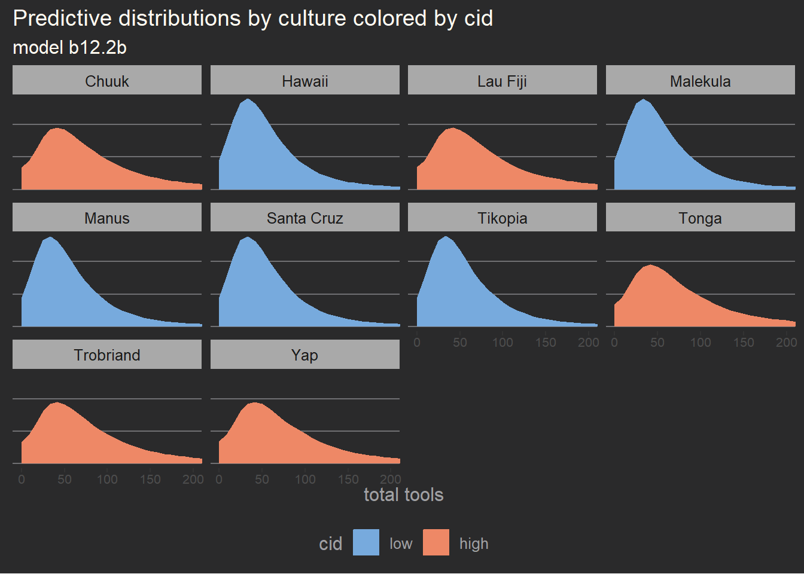
the main difference now is that since we use predictor \(cid\) then the parameter \(rate = b_0\) of the gamma distribution used to determined the \(\lambda_i\) is allowed to vary by \(cid\). Therefore we have different distribution possible by \(cid\) and can change the distribution by culture as follows.
predict <- list()
predict <- within(predict, {
newdata <- dataKline %>%
distinct(cid, culture) %>%
expand(nesting(cid, culture),
population = seq_range(dataKline$population, n = 20, pretty = TRUE))
data <- predicted_draws(b12.2b, newdata = newdata) %>%
as.data.frame()
})
# str(predict$data)
ggplot(predict$data, aes(x = .prediction, color = cid, fill = cid)) +
geom_density() +
scale_color_paletteer_d("khroma::light") +
scale_fill_paletteer_d("khroma::light") +
coord_cartesian(xlim = c(0, 200)) +
theme(axis.text.x = element_text(size = 8),
axis.text.y = element_blank(),
axis.ticks.y = element_blank()) +
labs(title = "Predictive distributions by culture colored by cid",
subtitle = "model b12.2b", x = "total tools", y = NULL) +
facet_wrap(. ~ culture)Poisson-lognormal
This is an extra section. The result is so useful it is worth adding here. See Kurtz lognormal.
it was also saved in a local file called Poisson-lognormal_mixture_Solomon Kurz.html in **C:_docs**
12.2 Zero-inflated outcomes
Make sure you read this section in Kurz (2020). It is loaded with very useful informations. Especially when using
brms.
12.2.1 Zero-inflated Poisson
This tpe oof model is called a hurdle model in the literature. This type of model has served me very well in the context of business.
With zero-inflated Poisson both parameters \(p\) and \(\lambda\) can have their own equation.
\[ \begin{align*} prod_i &\sim \mathcal{ZIPoisson}(p_i, \lambda_i) \\ logit(p_i) &= \alpha_p + \beta_p x_i \\ log(\lambda_i) &= \alpha_\lambda + \beta_\lambda x_i \\ \end{align*} \]
We use simstudy to simulate this.
sim <- list()
sim <- within(sim, {
defs <- defData(varname = "drink", dist = "categorical", formula = "0.8;0.2")
defs <- defData(defs, varname = "work", dist = "poisson", formula = 1)
defs <- defData(defs, varname = "output", dist = "nonrandom",
formula ="(2 - drink) * work")
data <- genData(n = 365, dtDefs = defs)
data <- genFactor(data, varname = "drink", labels = c("drinkNot", "drink"))
})
dataMonastery <- as.data.frame(sim$data)plot the data
ggplot(dataMonastery, aes(x = output)) +
geom_histogram(aes(fill = fdrink), binwidth = 1) +
scale_fill_paletteer_d("khroma::vibrant") +
stat_bin(aes(y = after_stat(count), label = ifelse(..count.., ..count.., "")),
geom = "text", color = "ghostwhite", vjust = -0.5) +
theme(legend.position = c(0.8, 0.8),
legend.title = element_blank(),
axis.ticks.y = element_blank(),
axis.text.y = element_blank()) +
labs(title = "Frequency of monastery's output",
subtitle = sprintf("output for %d days", nrow(sim$data)),
y = "nb of days")Warning: The dot-dot notation (`..count..`) was deprecated in ggplot2 3.4.0.
ℹ Please use `after_stat(count)` instead.`stat_bin()` using `bins = 30`. Pick better value with `binwidth`.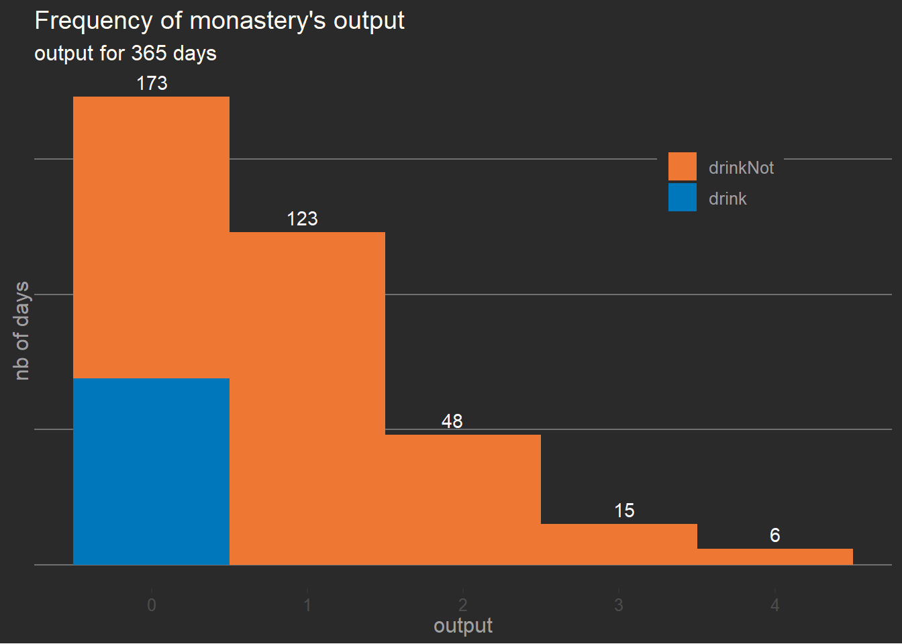
12.2.1.1 Model and fit
\[ \begin{align*} prod_i &\sim \mathcal{ZIPoisson}(p, \lambda) \\ logit(p) &= \alpha_p \\ log(\lambda) &= \alpha_\lambda \\ \alpha_p &\sim \mathcal{Beta}(2, 6) \\ \alpha_\lambda &\sim \mathcal{N}(1, 0.5) \end{align*} \]
In brms, \(p_i\) is denoted zi. To use a non-default prior for zi, make sure to indicate class = zi. Important to read Kurz (2020).
tictoc::tic(msg = sprintf("run time of %s, use the cache.", "75 secs."))
b12.3 <- xfun::cache_rds({
out <- brm(data = dataMonastery,
family = zero_inflated_poisson,
output ~ 1,
prior = c(prior(normal(1, 0.5), class = Intercept),
prior(beta(2, 6), class = zi)), # the brms default is beta(1, 1)
cores = detectCores(),
seed = 12)
out <- brms::add_criterion(out, criterion = c("waic", "loo"))
out},
file = "ch12_b12_03")Compiling Stan program...Start samplingtictoc::toc()run time of 75 secs., use the cache.: 65.27 sec elapsedsummary(b12.3) Family: zero_inflated_poisson
Links: mu = log; zi = identity
Formula: output ~ 1
Data: dataMonastery (Number of observations: 365)
Draws: 4 chains, each with iter = 2000; warmup = 1000; thin = 1;
total post-warmup draws = 4000
Population-Level Effects:
Estimate Est.Error l-95% CI u-95% CI Rhat Bulk_ESS Tail_ESS
Intercept -0.08 0.08 -0.24 0.08 1.00 1293 1496
Family Specific Parameters:
Estimate Est.Error l-95% CI u-95% CI Rhat Bulk_ESS Tail_ESS
zi 0.13 0.05 0.04 0.24 1.00 1164 1193
Draws were sampled using sampling(NUTS). For each parameter, Bulk_ESS
and Tail_ESS are effective sample size measures, and Rhat is the potential
scale reduction factor on split chains (at convergence, Rhat = 1).and we generate a summary with posterior::summarize_draws
samples <- list()
samples$data <- as_draws(b12.3) %>%
mutate_variables(lambda = exp(b_Intercept))
samples$stats <- samples$data %>%
summarize_draws() %>%
filter(variable != "lp__") %>%
mutate(across(.cols = where(is.numeric), round, digits = 2))
samples$stats# A tibble: 4 × 10
variable mean median sd mad q5 q95 rhat ess_bulk ess_tail
<chr> <dbl> <dbl> <dbl> <dbl> <dbl> <dbl> <dbl> <dbl> <dbl>
1 b_Intercept -0.08 -0.08 0.08 0.08 -0.22 0.05 1 1293. 1496.
2 zi 0.13 0.13 0.05 0.05 0.05 0.22 1 1164. 1193.
3 lprior -1.68 -1.61 0.48 0.43 -2.56 -1.01 1 1049. 1281.
4 lambda 0.92 0.92 0.08 0.07 0.81 1.05 1 1293. 1496.The \(b_Intercept\) represents \(\lambda\) on the log scale, because the link function for \(\lambda\). This can be confirm by looking at the summary which shows Links: mu = log; zi = identity.
We observe that \(lambda\) matches the actual rate of our simulation with defData(defs, varname = "work", dist = "poisson", formula = 1).
When using brms the parameter \(zi\) has link function identity as evidenced in the summary by Links: mu = log; zi = identity. In this case we have obtained \(zi = 0.20\) which is close enough to McEleath’s estimate of 0.23.
We observe that \(zi\) is the actual rate of our simulation with defData(varname = "drink", dist = "categorical", formula = "0.8;0.2").
12.3 Ordered categorical outcomes
12.3.1 Example: Moral intuition
data(Trolley)
dataTrolley <- Trolley %>%
mutate(response = factor(response, ordered = TRUE))
rm(Trolley)
skimr::skim(dataTrolley)| Name | dataTrolley |
| Number of rows | 9930 |
| Number of columns | 12 |
| _______________________ | |
| Column type frequency: | |
| factor | 5 |
| numeric | 7 |
| ________________________ | |
| Group variables | None |
Variable type: factor
| skim_variable | n_missing | complete_rate | ordered | n_unique | top_counts |
|---|---|---|---|---|---|
| case | 0 | 1 | FALSE | 30 | cfa: 331, cfb: 331, cfr: 331, cib: 331 |
| response | 0 | 1 | TRUE | 7 | 4: 2323, 5: 1462, 7: 1446, 6: 1445 |
| id | 0 | 1 | FALSE | 331 | 96;: 30, 96;: 30, 96;: 30, 96;: 30 |
| edu | 0 | 1 | FALSE | 8 | Bac: 3540, Som: 2460, Mas: 1410, Gra: 1050 |
| story | 0 | 1 | FALSE | 12 | box: 1324, bur: 1324, spe: 993, swi: 993 |
Variable type: numeric
| skim_variable | n_missing | complete_rate | mean | sd | p0 | p25 | p50 | p75 | p100 | hist |
|---|---|---|---|---|---|---|---|---|---|---|
| order | 0 | 1 | 16.50 | 9.29 | 1 | 9 | 16.5 | 24 | 32 | ▇▆▇▆▇ |
| age | 0 | 1 | 37.49 | 14.23 | 10 | 26 | 36.0 | 48 | 72 | ▅▇▇▅▂ |
| male | 0 | 1 | 0.57 | 0.49 | 0 | 0 | 1.0 | 1 | 1 | ▆▁▁▁▇ |
| action | 0 | 1 | 0.43 | 0.50 | 0 | 0 | 0.0 | 1 | 1 | ▇▁▁▁▆ |
| intention | 0 | 1 | 0.47 | 0.50 | 0 | 0 | 0.0 | 1 | 1 | ▇▁▁▁▇ |
| contact | 0 | 1 | 0.20 | 0.40 | 0 | 0 | 0.0 | 0 | 1 | ▇▁▁▁▂ |
| action2 | 0 | 1 | 0.63 | 0.48 | 0 | 0 | 1.0 | 1 | 1 | ▅▁▁▁▇ |
and we can describe the data using the summarytools which does a great job at creating that sort or report.
12.3.2 Describing and ordered distribution with intercepts
The histogram of response
p <- list()
p$df <- dataTrolley %>%
count(response)
p$freq <- ggplot(p$df, aes(x = response, y = n, fill = response)) +
geom_bar(stat = "identity") +
scale_fill_paletteer_d("khroma::bright") +
theme(legend.position = "none") +
labs(title = "Histogram of Trolley responses")
# p$freqThe cumulative proportions plot
p$df2 <- dataTrolley %>%
count(response) %>%
arrange(response) %>%
mutate(pct = n / sum(n),
cum_pct = cumsum(pct))
p$cumfreq <- ggplot(p$df2, aes(x = as.integer(response), y = cum_pct)) +
geom_line(color = "yellow", size = 1) +
geom_point(color = "orange", size = 2) +
labs(title = "Cumulative proportions",
x = "response", y = "cumulative probabilities")
# p$cumfreqAnd the plot of logit
p$df3 <- dataTrolley %>%
count(response) %>%
mutate(pct = n / sum(n),
cum_pct = cumsum(pct),
logit = log(cum_pct / (1 - cum_pct)),
logit_ctr = scale(logit, center = TRUE, scale = FALSE))
# d.p3
p$center <- ggplot(p$df3, aes(x = as.integer(response), y = logit)) +
geom_line(color = "pink", size = 1) +
geom_point(color = "violetred", size = 2) +
# scale_x_continuous(breaks = scales::breaks_width(width = 1)) +
# scale_y_continuous(breaks = scales::breaks_width(width = 1)) +
labs(title = "Log of Cumulative Odds",
y = "log of cumulative odds (centered)")
# p$centerand the 3 plots in figure 12.4 are
(p$freq + p$cumfreq + p$center) +
plot_annotation(title = "Figure 12.4")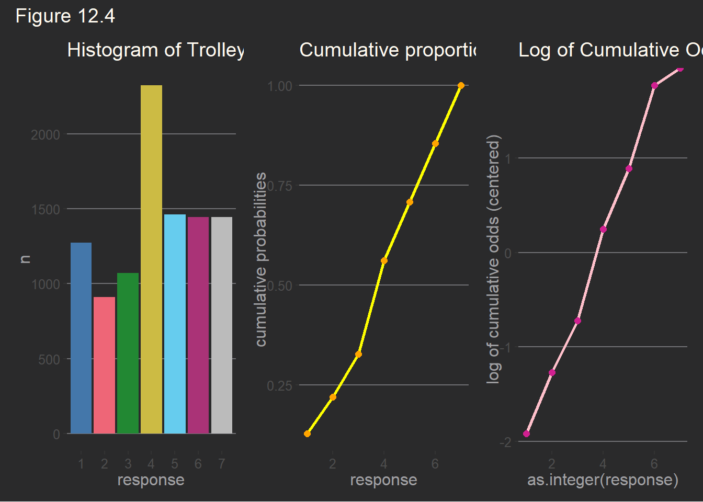
The model is
\[ \begin{align*} response_i &\sim \mathcal{Categorical}(\overrightarrow{p}) \\ logit(p_k) &= \alpha_k - \phi \\ \phi &= 0 \\ \alpha_k &\sim \mathcal{N}(0, 1.5) \end{align*} \]
and the fit with brms
# define start values
inits <- list(
`Intercept[1]` = -2,
`Intercept[2]` = -1,
`Intercept[3]` = 0,
`Intercept[4]` = 1,
`Intercept[5]` = 2,
`Intercept[6]` = 2.5
)
inits_list <- list(inits, inits, inits, inits)
tictoc::tic(msg = sprintf("run time of %s, use the cache.", "13 mins."))
b12.4 <- xfun::cache_rds({
out <- brm(
data = dataTrolley,
family = cumulative,
response ~ 1,
prior = c(
prior(normal(0, 1.5), class = Intercept)),
cores = detectCores(),
# the start values
init = inits_list,
seed = 12)
out <- brms::add_criterion(out, criterion = c("waic", "loo"))
out},
file = "ch12_b12_04")Compiling Stan program...Start samplingtictoc::toc()run time of 13 mins., use the cache.: 1167.78 sec elapsedwhich gives the summary
print(b12.4) Family: cumulative
Links: mu = logit; disc = identity
Formula: response ~ 1
Data: dataTrolley (Number of observations: 9930)
Draws: 4 chains, each with iter = 2000; warmup = 1000; thin = 1;
total post-warmup draws = 4000
Population-Level Effects:
Estimate Est.Error l-95% CI u-95% CI Rhat Bulk_ESS Tail_ESS
Intercept[1] -1.92 0.03 -1.98 -1.86 1.00 2638 2754
Intercept[2] -1.27 0.02 -1.31 -1.22 1.00 3851 3298
Intercept[3] -0.72 0.02 -0.76 -0.68 1.00 4245 3350
Intercept[4] 0.25 0.02 0.21 0.29 1.00 4404 3363
Intercept[5] 0.89 0.02 0.85 0.93 1.00 4723 3736
Intercept[6] 1.77 0.03 1.72 1.83 1.00 4566 3591
Family Specific Parameters:
Estimate Est.Error l-95% CI u-95% CI Rhat Bulk_ESS Tail_ESS
disc 1.00 0.00 1.00 1.00 NA NA NA
Draws were sampled using sampling(NUTS). For each parameter, Bulk_ESS
and Tail_ESS are effective sample size measures, and Rhat is the potential
scale reduction factor on split chains (at convergence, Rhat = 1).and we convert the intercepts to the normal scale
b12.4 %>%
fixef() %>%
brms::inv_logit_scaled() Estimate Est.Error Q2.5 Q97.5
Intercept[1] 0.1282631 0.5075233 0.1218309 0.1350927
Intercept[2] 0.2198287 0.5061416 0.2116875 0.2279192
Intercept[3] 0.3276659 0.5053884 0.3184821 0.3369098
Intercept[4] 0.5616281 0.5051081 0.5517685 0.5713485
Intercept[5] 0.7088601 0.5055067 0.6999036 0.7175596
Intercept[6] 0.8544395 0.5070817 0.8477250 0.8613707b12.4 %>%
fixef() %>%
gtools::inv.logit() Estimate Est.Error Q2.5 Q97.5
Intercept[1] 0.1282631 0.5075233 0.1218309 0.1350927
Intercept[2] 0.2198287 0.5061416 0.2116875 0.2279192
Intercept[3] 0.3276659 0.5053884 0.3184821 0.3369098
Intercept[4] 0.5616281 0.5051081 0.5517685 0.5713485
Intercept[5] 0.7088601 0.5055067 0.6999036 0.7175596
Intercept[6] 0.8544395 0.5070817 0.8477250 0.8613707Important: The SD i.e. Est.Error are not valid using the inv_logit_scaled, that is using a direct inverse exp function.
They must be computed using a posterior sample.
samples <- list()
samples <- within(samples, {
data <- as_draws(b12.4) %>%
as.data.frame()
summ <- data %>%
select(!matches(match = "disc|lp__")) %>%
mutate(across(.cols = where(is.double), .fns = ~gtools::inv.logit(.))) %>%
pivot_longer(cols = everything()) %>%
mutate(name = sub(pattern = "^X[[:digit:]][.]b_", replacement = "", x = name),
name = sub(pattern = "[.]$", replacement = "]", x = name),
name = sub(pattern = "[.]", replacement = "[", x = name)) %>%
group_by(name) %>%
ggdist::mean_qi(.width = 0.95)
})
# glimpse(samples$data)
# glimpse(samples$summ)
samples$summ# A tibble: 10 × 7
name value .lower .upper .width .point .interval
<chr> <dbl> <dbl> <dbl> <dbl> <chr> <chr>
1 Intercept[1] 0.128 0.122 0.135 0.95 mean qi
2 Intercept[2] 0.220 0.212 0.228 0.95 mean qi
3 Intercept[3] 0.328 0.318 0.337 0.95 mean qi
4 Intercept[4] 0.562 0.552 0.571 0.95 mean qi
5 Intercept[5] 0.709 0.700 0.718 0.95 mean qi
6 Intercept[6] 0.854 0.848 0.861 0.95 mean qi
7 X1[lprior 0.0000403 0.0000371 0.0000439 0.95 mean qi
8 X2[lprior 0.0000403 0.0000371 0.0000439 0.95 mean qi
9 X3[lprior 0.0000402 0.0000370 0.0000437 0.95 mean qi
10 X4[lprior 0.0000403 0.0000370 0.0000437 0.95 mean qi and to validate our fit, we see that the \(value\) in the summary is the same as the \(cum_pct\) previously computed.
p$df3$cum_pct[1] 0.1282981 0.2198389 0.3276939 0.5616314 0.7088620 0.8543807 1.000000012.3.3 Adding predictor variables
This form automatically ensure the correct ordering of the outcome values, while still morphing the likelihood of each individual valueas the predictor \(x_i\) changes value. Why is the linear model \(\phi\) substracted from each intercept? Because if we decrease the log-cumulative-odds of every outcome value \(k\) below the maximum, this necessarily shifts probability mass upwards towards higher outcome values.
\[ \begin{align*} \log{\left[ \frac{Pr(y_i \le k)}{1-Pr(y_i \le k)} \right]} &= \alpha_k - \phi_i \\ \phi_i &= \beta x_i \end{align*} \]
For example lets take model b12.4
fixef(b12.4) Estimate Est.Error Q2.5 Q97.5
Intercept[1] -1.9164042 0.03009554 -1.9752051 -1.8566613
Intercept[2] -1.2666652 0.02456766 -1.3147834 -1.2200981
Intercept[3] -0.7187611 0.02155436 -0.7607561 -0.6770958
Intercept[4] 0.2477722 0.02043306 0.2078186 0.2873551
Intercept[5] 0.8898544 0.02202769 0.8468387 0.9323883
Intercept[6] 1.7698536 0.02832875 1.7168685 1.826721312.3.3.1 Logistic / Logit functions
See the appendix A of this book for a detailed treatment of all these functions. They will be added the suffix .new to identify them.
The logistic() and inv_logit() functions are actually the same as stats::plogis().
Also, the function logit() already exists as stats::qlogis().
therefore dordlogit() as given
dordlogit.new <- function(x, phi = 0L, log = FALSE) {
x <- sort(x) # the ordering is important
p <- stats::plogis(q = c(x, Inf), location = phi)
p <- c( p[1], p[2:length(p)] - p[1:(length(p)-1)] )
if (log) p <- log(p)
p
}which gives about the same result as R code 11.9 in McElreath on p. 386 with R code 12.20, and Kurtz.
probk <- dordlogit.new(fixef(b12.4)[, 1])
round(probk, 2)Intercept[1] Intercept[2] Intercept[3] Intercept[4] Intercept[5] Intercept[6]
0.13 0.09 0.11 0.23 0.15 0.15
0.15 which gives and expected value of
sum(1:7 * probk)[1] 4.19931512.3.3.2 Subsracting from the log-cumulative odds
If we substract from the log-cumulative odds then we shift the probability mass to higher outcome values.
For example with model b12.4
probk <- dordlogit.new(fixef(b12.4)[, 1])
round(probk, 2)Intercept[1] Intercept[2] Intercept[3] Intercept[4] Intercept[5] Intercept[6]
0.13 0.09 0.11 0.23 0.15 0.15
0.15 which gives an expected value
sum(1:7 * probk)[1] 4.199315but if we substract 0.5
(dordlogit.new(fixef(b12.4)[, 1], phi = 0.5))Intercept[1] Intercept[2] Intercept[3] Intercept[4] Intercept[5] Intercept[6]
0.08193032 0.06402722 0.08219700 0.20912069 0.15897241 0.18447004
0.21928231 then we have a higher expected value
sum(dordlogit.new(fixef(b12.4)[, 1], phi = 0.5) * 1:7)[1] 4.72971712.3.3.3 Ordered categorical with several predictors
Our model with several predictors is
\[ \begin{align*} response_i &\sim Categorical(\overrightarrow{p}) \\ logit(Pr(y_i \leq k)) &= \frac{Pr(y_i \leq k)}{1 - Pr(y_i \leq k)} = \alpha_k - \phi_i \\ \phi_i &= \beta_{action} \cdot action_i + \beta_{intention} \cdot intention_i + \beta_{contact} \cdot contact_i + \beta{a,i} \cdot(action_i \times intention_i) + \beta{c,i} \cdot(contact_i \times intention_i) \\ \alpha_k &\sim \mathcal{N}(0, 1.5) \\ \beta_{\bullet} &\sim \mathcal{N}(0, 0.5) \end{align*} \]
and the fit is
tictoc::tic(msg = sprintf("run time of %s, use the cache.", "15 mins."))
b12.5 <- xfun::cache_rds({
out <- brms::brm(data = dataTrolley,
family = cumulative,
formula = response ~ 1 + action + intention + contact +
action:intention + contact:intention,
prior = c(prior(normal(0, 1.5), class = Intercept),
prior(normal(0, 0.5), class = b)),
cores = detectCores(),
# inits = list(inits, inits),
seed = 12)
out <- brms::add_criterion(out, criterion = c("waic", "loo"))
out},
file = "ch12_b12_05")Compiling Stan program...Start samplingtictoc::toc()run time of 15 mins., use the cache.: 1567.15 sec elapsedsummary(b12.5) Family: cumulative
Links: mu = logit; disc = identity
Formula: response ~ 1 + action + intention + contact + action:intention + contact:intention
Data: dataTrolley (Number of observations: 9930)
Draws: 4 chains, each with iter = 2000; warmup = 1000; thin = 1;
total post-warmup draws = 4000
Population-Level Effects:
Estimate Est.Error l-95% CI u-95% CI Rhat Bulk_ESS Tail_ESS
Intercept[1] -2.64 0.05 -2.74 -2.54 1.00 2983 2808
Intercept[2] -1.94 0.05 -2.04 -1.85 1.00 2961 2603
Intercept[3] -1.35 0.05 -1.44 -1.26 1.00 2953 2597
Intercept[4] -0.31 0.04 -0.40 -0.23 1.00 2887 2617
Intercept[5] 0.36 0.04 0.27 0.44 1.00 2873 2306
Intercept[6] 1.26 0.05 1.17 1.36 1.00 3106 2722
action -0.48 0.05 -0.58 -0.37 1.00 2966 2674
intention -0.30 0.06 -0.41 -0.18 1.00 2625 2494
contact -0.35 0.07 -0.48 -0.21 1.00 2996 2668
action:intention -0.43 0.08 -0.58 -0.28 1.00 2758 3075
intention:contact -1.23 0.09 -1.42 -1.04 1.00 2683 2988
Family Specific Parameters:
Estimate Est.Error l-95% CI u-95% CI Rhat Bulk_ESS Tail_ESS
disc 1.00 0.00 1.00 1.00 NA NA NA
Draws were sampled using sampling(NUTS). For each parameter, Bulk_ESS
and Tail_ESS are effective sample size measures, and Rhat is the potential
scale reduction factor on split chains (at convergence, Rhat = 1).and plot the coefficients
get_variables(b12.5) [1] "b_Intercept[1]" "b_Intercept[2]" "b_Intercept[3]"
[4] "b_Intercept[4]" "b_Intercept[5]" "b_Intercept[6]"
[7] "b_action" "b_intention" "b_contact"
[10] "b_action:intention" "b_intention:contact" "disc"
[13] "lprior" "lp__" "accept_stat__"
[16] "stepsize__" "treedepth__" "n_leapfrog__"
[19] "divergent__" "energy__" labs <- paste0("beta[", 1:5, "]")
b12.5_post <- gather_draws(model = b12.5, `b_action.*`, `b_contact.*`, `b_intention.*`,
regex = TRUE)
ggplot(b12.5_post, aes(x = .value, y = .variable)) +
geom_vline(xintercept = 0, alpha = 1/5, linetype = 3) +
stat_gradientinterval(.width = .5, size = 1, point_size = 3/2, shape = 21,
point_fill = "darkgreen",
fill ="green",
color = "darkgreen") +
scale_x_continuous("marginal posterior", breaks = -5:0 / 4) +
coord_cartesian(xlim = c(-1.4, 0)) +
labs(x = "marginal posterior", y = NULL,
title = "Model b12.5 coefficients")Warning: fill_type = "gradient" is not supported by the current graphics device.
- Falling back to fill_type = "segments".
- If you believe your current graphics device *does* support
fill_type = "gradient" but auto-detection failed, set that option
explicitly and consider reporting a bug.
- See help("geom_slabinterval") for more information.Warning: Using the `size` aesthietic with geom_segment was deprecated in ggplot2 3.4.0.
ℹ Please use the `linewidth` aesthetic instead.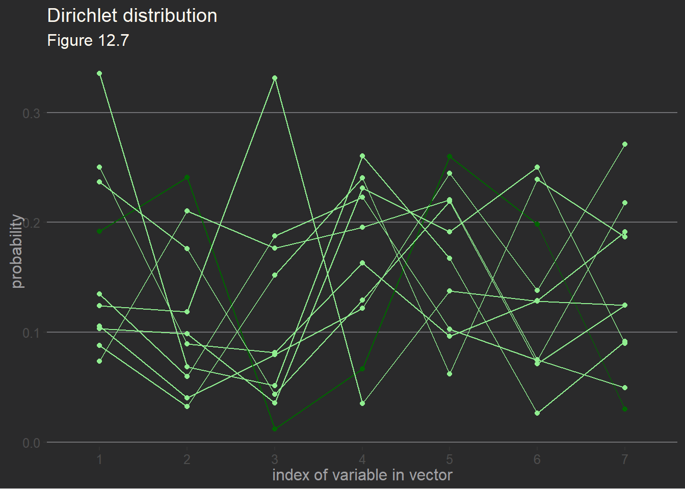
12.4 Ordered categorical predictors
12.4.1 Dirichlet distribution
The Dirichlet distribution, used in this section, can be illustrated as follows
set.seed(1805) # seed from McElreath
dp <- gtools::rdirichlet(10, alpha = rep(2, 7)) %>%
data.frame() %>%
setNames(1:7) %>%
mutate(row = seq_len(nrow(.))) %>%
pivot_longer(cols = -row, names_to = "index", values_to = "prob")
ggplot(dp, aes(x = index, y = prob, group = row)) +
geom_line(aes(color = row == 3)) +
geom_point(aes(color = row == 3)) +
scale_color_manual(values = c("TRUE" = "darkgreen", "FALSE" = "lightgreen")) +
theme(legend.position = "none") +
labs(title = "Dirichlet distribution",
subtitle = "Figure 12.7",
x = "index of variable in vector",
y = "probability")NOTE: The brms package also has a rdirchlet() function which is very useful when investigating priors. See Kurz (2020) for details.
12.4.2 Data
data(Trolley)
d <- Trolley
rm(Trolley)
d <- d %>%
mutate(edu_new =
recode_factor(edu,
"Elementary School" = 1,
"Middle School" = 2,
"Some High School" = 3,
"High School Graduate" = 4,
"Some College" = 5,
"Bachelor's Degree" = 6,
"Master's Degree" = 7,
"Graduate Degree" = 8,
.ordered = TRUE) %>%
as.integer())
d %>%
distinct(edu, edu_new) %>%
arrange(edu_new) edu edu_new
1 Elementary School 1
2 Middle School 2
3 Some High School 3
4 High School Graduate 4
5 Some College 5
6 Bachelor's Degree 6
7 Master's Degree 7
8 Graduate Degree 812.4.3 Model and fit
The model is
\[ \begin{align*} response_i &\sim \mathcal{Categorical}(\overrightarrow{\textbf{p}}) \\ logit(p_k) &= \alpha_k - \phi_i \\ \phi_i &= \beta_E \sum_{j=0}^{E_i-1} \delta_j + \beta_A \cdot action_i + \beta_I \cdot intention_i + \beta_C \cdot contact_i \\ \alpha_k &\sim \mathcal{N}(0,1.5) \\ \beta_A, \beta_I, \beta_C &\sim \mathcal{N}(0,1) \\ \beta_E &\sim \mathcal{N}(0, 0.143) \\ \overrightarrow{\mathbf{\delta}} &\sim \mathcal{Dirichlet}([2,2,2,2,2,2,2]) \end{align*} \]
tictoc::tic(msg = sprintf("run time of %s, use the cache.", "90 mins."))
b12.6 <- xfun::cache_rds({
out <- brm(data = d,
family = cumulative,
response ~ 1 + action + contact + intention + mo(edu_new), # note the `mo()` syntax
prior = c(prior(normal(0, 1.5), class = Intercept),
prior(normal(0, 1), class = b),
# note the new kinds of prior statements
# for monotonic variable edu_new
prior(normal(0, 0.143), class = b, coef = moedu_new),
prior(dirichlet(2, 2, 2, 2, 2, 2, 2), class = simo, coef = moedu_new1)),
cores = detectCores(),
seed = 12)
out <- brms::add_criterion(out, criterion = c("waic", "loo"))
out},
file = "ch12_b12_06")Compiling Stan program...Start samplingtictoc::toc()run time of 90 mins., use the cache.: 3388.75 sec elapsedsummary(b12.6) Family: cumulative
Links: mu = logit; disc = identity
Formula: response ~ 1 + action + contact + intention + mo(edu_new)
Data: d (Number of observations: 9930)
Draws: 4 chains, each with iter = 2000; warmup = 1000; thin = 1;
total post-warmup draws = 4000
Population-Level Effects:
Estimate Est.Error l-95% CI u-95% CI Rhat Bulk_ESS Tail_ESS
Intercept[1] -3.13 0.16 -3.50 -2.84 1.00 2038 1781
Intercept[2] -2.44 0.16 -2.82 -2.16 1.00 2054 1787
Intercept[3] -1.86 0.16 -2.23 -1.58 1.00 2038 1728
Intercept[4] -0.84 0.16 -1.21 -0.56 1.00 2040 1838
Intercept[5] -0.17 0.16 -0.53 0.10 1.00 2048 1707
Intercept[6] 0.74 0.16 0.37 1.02 1.00 2062 1823
action -0.71 0.04 -0.79 -0.63 1.00 4171 3204
contact -0.96 0.05 -1.06 -0.86 1.00 3979 2939
intention -0.72 0.04 -0.79 -0.65 1.00 4737 2771
moedu_new -0.05 0.03 -0.11 -0.00 1.00 2020 1804
Simplex Parameters:
Estimate Est.Error l-95% CI u-95% CI Rhat Bulk_ESS Tail_ESS
moedu_new1[1] 0.26 0.15 0.04 0.59 1.00 2809 2726
moedu_new1[2] 0.14 0.09 0.02 0.36 1.00 4471 2419
moedu_new1[3] 0.19 0.11 0.03 0.42 1.00 3986 2539
moedu_new1[4] 0.16 0.09 0.03 0.38 1.00 3225 2444
moedu_new1[5] 0.04 0.04 0.00 0.15 1.00 2778 1528
moedu_new1[6] 0.09 0.06 0.01 0.25 1.00 3750 2602
moedu_new1[7] 0.12 0.07 0.02 0.29 1.00 4112 3074
Family Specific Parameters:
Estimate Est.Error l-95% CI u-95% CI Rhat Bulk_ESS Tail_ESS
disc 1.00 0.00 1.00 1.00 NA NA NA
Draws were sampled using sampling(NUTS). For each parameter, Bulk_ESS
and Tail_ESS are effective sample size measures, and Rhat is the potential
scale reduction factor on split chains (at convergence, Rhat = 1).delta_labels <- c("Elem", "MidSch", "SHS", "HSG", "SCol", "Bach", "Mast", "Grad")
dp <- posterior_samples(b12.6) %>%
select(contains("simo_moedu_new1")) %>%
setNames(paste0(delta_labels[2:8], "~(delta[", 1:7, "])"))Warning: Method 'posterior_samples' is deprecated. Please see ?as_draws for
recommended alternatives.GGally::ggpairs(dp, labeller = label_parsed) +
ggthemes::theme_hc() +
theme(strip.text = element_text(size = 8))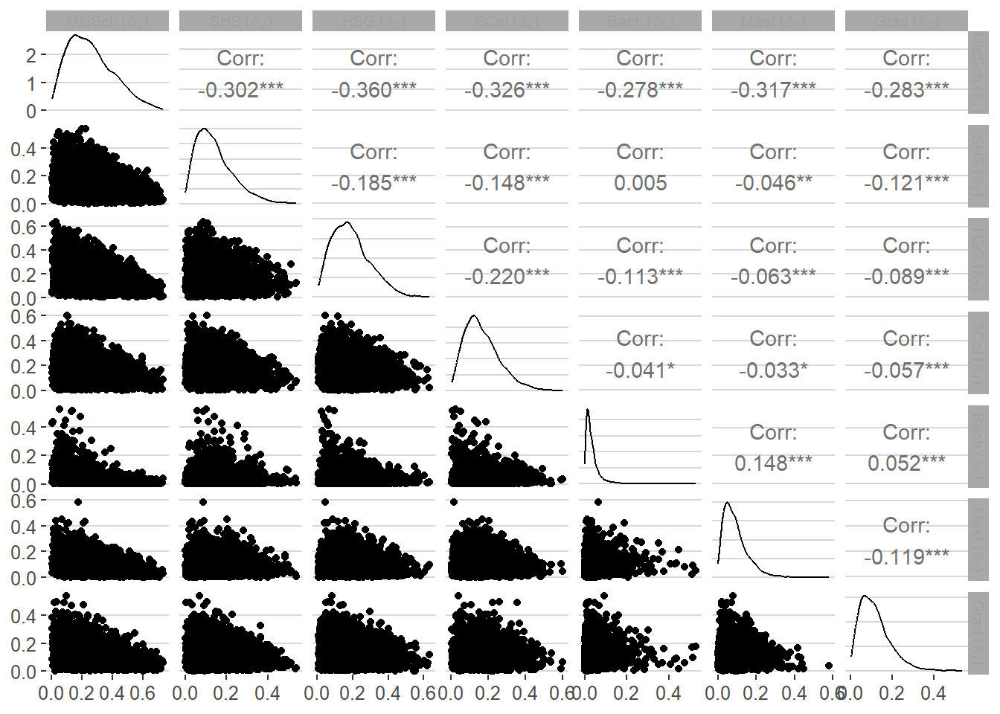